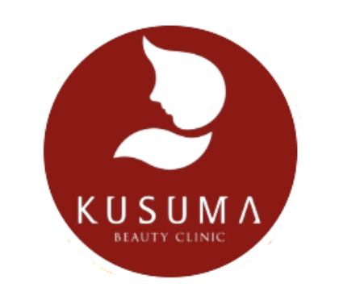
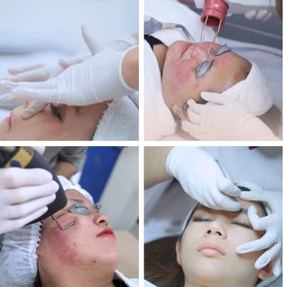
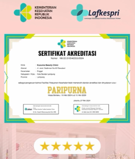
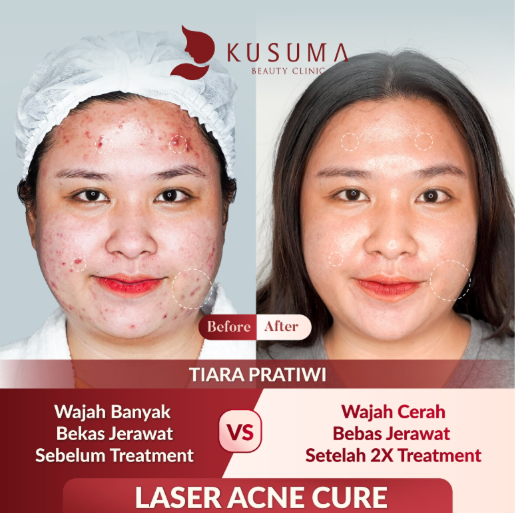
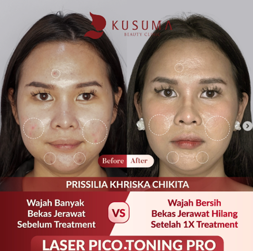
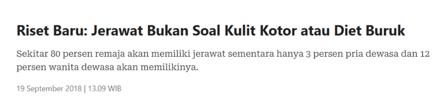
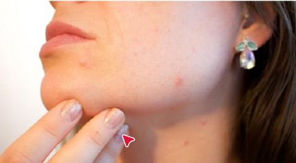

Masalah kulit #pastireda
Sudah beroperasi lebih dari 15 tahun di industri kecantikan

Akreditasi dari Kementerian Kesehatan Republik Indonesia (Kemenkes RI)

Sebelum & Sesudah – Bukti Nyata Transformasi Kulit!
Apa kata mereka setelah perawatan di Kusuma Beauty Clinic?

"Dulu saya selalu minder karena jerawat di wajah saya yang parah. Setelah perawatan
di Kusuma Beauty Clinic, kulit saya jauh lebih bersih dan sehat! Terima
kasih!" – Tiara, 24 tahun

"Saya sempat putus asa karena jerawat hormonal yang selalu muncul setiap bulan.
Setelah mengikuti acne treatment di Kusuma Beauty Clinic, sekarang wajah saya
lebih tenang dan tidak mudah breakout lagi!"
– Prissilia, 22 tahun
konsultasi dengan dokter terpercaya
dr. Cindy Fransisca, Sp.Dv
dr. Delmy Sanjaya (Aesthetic Doctor)
Acne Treatment – Spesialis Perawatan Jerawat
💎 Acne Specialist – ditangani oleh dokter kulit profesional
💎 Konsultasi Dokter Gratis – temukan perawatan terbaik untuk kulit Anda
💎 Sebelum & Sesudah Perawatan – bukti nyata transformasi dari kulit pasien
💎 Perawatan & Produk Berkualitas – facial acne, chemical peeling, laser treatment, skincare yang diformulasikan secara khusus


apa itu jerawat?
Jerawat terjadi saat pori-pori tersumbat minyak, sel kulit mati, & bakteri, menyebabkan peradangan, komedo, pustula, hingga kista.
kenapa jerawat tidak baik untuk dibiarkan?
🚨 Acne vulgaris – jerawat umum yang bisa berkembang menjadi lebih parah
🚨 Permanent scarring – bekas luka yang sulit dihilangkan
🚨 Dampak psikologis – menurunkan kepercayaan diri yang dapat memicu depresi
🚨 Sosial withdrawal – menghindari interaksi sosial karena kurang percaya diri